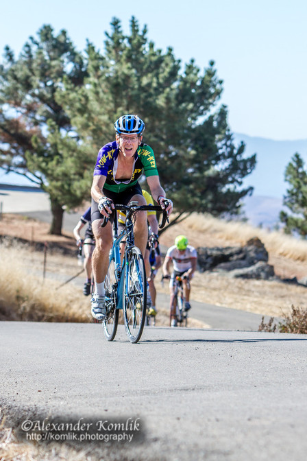

Low-Key Hillclimbs Aggregate Results:
Welch Creek
generated Fri Nov 4 10:34:15 PDT 2016
|
|  |
| 2014 week 3: Terrance Kloeckl shows the suffering of Welch Creek Road (Alexander Komlik) |
Results are listed here from the Low-Key archives, sorted by time for each climb. Some years start and/or finish time differ slightly, such as
with Kings Mt Road where after 1995 the start moved from Entrance Way to Greer.
Results are ranked by time first, score second.
Score is calculated using a simple percent-of-median-speed
formula, with time adjustments for division. These scores will generally differ from those calculated in the results for that particular year, since
the scoring scheme has evolved. Tandems are split between 1998, when they were counted as single participants, and other years, when the individual
riders have been counted separately
Results for Men
| rank | time | score | rider | cat | team | year | week | code |
|---|
| 1 | 22:23 | 131.124 | Hanns Detlefsen | 40+ | Sr's & Mr's of No Mercy | 2014 | 3 | |
| 2 | 23:17 | 126.056 | Stefano Profumo | 35+ | Squadra SF | 2014 | 3 | |
| 3 | 23:25 | 125.338 | Bill Laddish | 35+ | Team CVC | 2014 | 3 | M |
| 4 | 23:28 | 125.071 | David Collet | 40+ | Pen Velo/Pomodoro | 2014 | 3 | |
| 5 | 24:05 | 121.869 | Joseph Sullivan | 35+ | San Jose Bike Club | 2014 | 3 | |
| 6 | 24:08 | 128.774 | Brian Lucido | Tandem | Sr's & Mr's of No Mercy | 2010 | 6 | |
| 7 | 24:13 | 121.198 | Carl Nielson | 55+ | Sr's & Mr's of No Mercy | 2014 | 3 | |
| 8 | 24:20 | 129.452 | Tim Clark | 35+ | Red Dragon | 2007 | 6 | |
| 9 | 24:29 | 119.877 | Chris Evans | 2 | Squadra SF | 2014 | 3 | |
| 10 | 24:51 | 125.060 | Tim Clark | 40+ | Low-Key | 2010 | 6 | |
| 11 | 24:52 | 126.676 | Gary Gellin | 35+ | Alto Velo | 2007 | 6 | |
| 12 | 25:03 | 117.166 | Rich McLovin Brown | 35+ | The Brown Zone | 2014 | 3 | |
| 13 | 25:03 | 124.004 | Russell Stevens | 40+ | ACTC | 2010 | 6 | |
| 14 | 25:06 | 125.498 | Clark Foy | 40+ | San Jose Bike Club | 2007 | 6 | |
| 15 | 25:12 | 116.468 | Shahram Moatazedi | 40+ | LGBRC | 2014 | 3 | |
| 16 | 25:13 | 116.391 | Robert Easley | 45+ | Sr's & Mr's of No Mercy | 2014 | 3 | |
| 17 | 25:20 | 122.691 | Carl Nielson | 50+ | Sr's & Mr's of No Mercy | 2010 | 6 | |
| 18 | 25:29 | 123.610 | Todd Sinclair | 30+ | Team Shonky | 2007 | 6 | |
| 19 | 25:44 | 120.737 | jacob berkman | 30+ | Mission Cycling | 2010 | 6 | |
| 20 | 25:48 | 113.760 | Rob Nast | 50+ | Plus 3 | 2014 | 3 | |
| 21 | 25:59 | 121.232 | Justin Lucke | Vegan | Google | 2007 | 6 | |
| 22 | 26:00 | 112.885 | Samuel Desré | Junior | Vikings | 2014 | 3 | |
| 23 | 26:01 | 119.453 | brian edwards | | The Dirkers | 2010 | 6 | |
| 24 | 26:03 | 119.262 | Daniel Connelly | 3 | Low-Key | 2010 | 6 | |
| 25 | 26:10 | 118.761 | Clark Foy | U23 | San Jose Bike Club | 2010 | 6 | |
| 26 | 26:17 | 118.249 | Daryl Spano | 40+ | San Jose Bike Club | 2010 | 6 | |
| 27 | 26:26 | 117.533 | Joe Fant | 50+ | San Jose Bike Club | 2010 | 6 | |
| 28 | 26:29 | 110.824 | Scott Gammon | 6 | Nest | 2014 | 3 | |
| 29 | 26:30 | 117.289 | Tom Gardin | 45+ | Low-Key | 2010 | 6 | |
| 30 | 26:31 | 117.193 | Christian Paquet | 50+ | Doogie | 2010 | 6 | |
| 31 | 26:33 | 110.546 | Daryl Spano | 45+ | The Brown Zone | 2014 | 3 | |
| 32 | 26:38 | 118.273 | Daniel Connelly | 3 | TNT | 2007 | 6 | |
| 32 | 26:38 | 118.273 | Carl A. Nielson | 45+ | Wells Fargo Racing Team | 2007 | 6 | |
| 34 | 26:38 | 110.200 | Joe Karbowski | 35+ | Team Joe Karbowski | 2014 | 3 | |
| 35 | 26:39 | 110.131 | Glen Kinion | 50+ | Sr's & Mr's of No Mercy | 2014 | 3 | |
| 36 | 26:43 | 109.857 | Jeffrey Baxter | 45+ | LGBRC | 2014 | 3 | |
| 37 | 26:46 | 109.651 | Joe Fant | 55+ | The Brown Zone | 2014 | 3 | |
| 38 | 26:49 | 115.868 | Ken Gallardo | 35+ | Pen Velo/Pomodoro | 2010 | 6 | |
| 39 | 26:51 | 117.318 | Thomas Novikoff | 2 | Cambio | 2007 | 6 | |
| 40 | 26:53 | 109.175 | Bill Brier | 50+ | Team Fremont FFBC p/b Chipotle | 2014 | 3 | |
| 41 | 27:11 | 114.278 | Ryan Bickerstaff | 25+ | PowerBar | 2010 | 6 | |
| 42 | 27:12 | 115.809 | Rupert Brauch | 3 | Alto Velo | 2007 | 6 | |
| 43 | 27:16 | 107.641 | Travis Retzer | 30+ | Team CVC | 2014 | 3 | |
| 44 | 27:20 | 115.244 | Geoff Drake | 45+ | Bike Trip/Symantec | 2007 | 6 | |
| 45 | 27:20 | 107.378 | Jeff Botelho | 45+ | CA Technologies | 2014 | 3 | |
| 46 | 27:23 | 107.182 | Jim Torrence | 50+ | Eden Bicycles | 2014 | 3 | |
| 47 | 27:24 | 113.423 | Ron Brunner | 40+ | Low-Key | 2010 | 6 | |
| 48 | 27:26 | 106.987 | Rich Hill | 45+ | LGBRC | 2014 | 3 | |
| 49 | 27:27 | 114.754 | Dan Hicklin | 4 | LGBRC | 2007 | 6 | |
| 50 | 27:29 | 113.031 | Shance Ordell | 35+ | Western Wheelers | 2010 | 6 | |
| 51 | 27:31 | 112.949 | Klaus Brosamle | 25+ | Team Zappi's (Oxford) | 2010 | 6 | |
| 52 | 27:31 | 112.901 | Brian Sterling | 45+ | Alto Velo | 2010 | 6 | |
| 53 | 27:34 | 106.469 | Christian Paquet | 55+ | Doogie | 2014 | 3 | |
| 54 | 27:37 | 106.276 | Kevin Merrigan | 45+ | Team CVC | 2014 | 3 | |
| 55 | 27:39 | 112.404 | Marcel Appelman | 40+ | Mission Cycling | 2010 | 6 | |
| 56 | 27:41 | 113.787 | Rich Hill | 40+ | LGBRC | 2007 | 6 | |
| 57 | 27:48 | 113.309 | Mark Edwards | 45+ | Bike Trip/Symantec | 2007 | 6 | |
| 58 | 27:52 | 105.323 | BIll Harkola | 55+ | Pen Velo/Pomodoro | 2014 | 3 | |
| 59 | 28:01 | 112.433 | Christopher Bosch | 5 Wannabee | Google | 2007 | 6 | |
| 60 | 28:01 | 104.759 | Bruce Gardner | 35+ | Sr's & Mr's of No Mercy | 2014 | 3 | |
| 61 | 28:05 | 104.510 | Zachary Hilton | 35+ | Sr's & Mr's of No Mercy | 2014 | 3 | |
| 62 | 28:20 | 111.176 | John Walker | 40+ | Google | 2007 | 6 | |
| 63 | 28:27 | 109.218 | Mark Debbage | 40+ | | 2010 | 6 | |
| 64 | 28:28 | 103.103 | Dino Brown | 50+ | The Brown Zone | 2014 | 3 | |
| 65 | 28:31 | 108.995 | Adam Brinkman | 30+ | The Dirkers | 2010 | 6 | |
| 66 | 28:32 | 102.862 | Mark King | 45+ | Equipe Flamme Rouge | 2014 | 3 | |
| 67 | 28:39 | 108.475 | Klaus Fleischmann | 40+ | | 2010 | 6 | |
| 68 | 28:40 | 102.384 | Parker Gara | Junior | Vikings | 2014 | 3 | |
| 69 | 28:41 | 109.820 | Jeff Botelho | 45+ | TFSF | 2007 | 6 | |
| 70 | 28:49 | 107.848 | Carmelo Rios | 50+ | Plus 3 | 2010 | 6 | |
| 71 | 28:55 | 101.499 | Paul McKenzie | 60+ | Sr's & Mr's of No Mercy | 2014 | 3 | |
| 72 | 28:57 | 108.808 | Scott Martin | 50+ | Bike Trip/Symantec | 2007 | 6 | |
| 73 | 28:58 | 107.258 | Brian Canali | 45+ | | 2010 | 6 | |
| 74 | 29:05 | 108.309 | Michael Gonia | 40+ | Republic of Anaerobia | 2007 | 6 | |
| 75 | 29:10 | 108.000 | Josh Beisel | 25+ | Indiana University | 2007 | 6 | |
| 76 | 29:19 | 107.447 | DJ Novotney | 30+ | | 2007 | 6 | |
| 77 | 29:21 | 100.000 | Terrance Kloeckl | 50+ | Younger Next Year | 2014 | 3 | |
| 78 | 29:23 | 107.204 | Chad Rosser | Triathlete | Republic of Anaerobia | 2007 | 6 | |
| 79 | 29:24 | 105.708 | Andy Crews | 40+ | | 2010 | 6 | |
| 80 | 29:24 | 105.666 | Michael Kolb | 45+ | Google | 2010 | 6 | |
| 81 | 29:25 | 105.624 | Alan Weatherall | 45+ | San Jose Bike Club | 2010 | 6 | |
| 82 | 29:27 | 99.660 | Doug Reynolds | 60+ | NightRiders | 2014 | 3 | |
| 83 | 29:30 | 99.492 | Theo Goguely | Cat Off-Season | Diablo | 2014 | 3 | |
| 84 | 29:31 | 106.719 | Harvey Wong | 35+ | Friends of Janet | 2007 | 6 | |
| 85 | 29:33 | 99.323 | Roland Freund | 55+ | Team Plan C | 2014 | 3 | |
| 86 | 29:34 | 105.118 | Tick Houk | 50+ | Plus 3 | 2010 | 6 | |
| 87 | 29:39 | 104.811 | Chuck Spiteri | 50+ | Pen Velo/Pomodoro | 2010 | 6 | |
| 88 | 29:42 | 98.822 | Kent Slaney | Junior | Vikings | 2014 | 3 | |
| 88 | 29:42 | 98.822 | Will Von Kaenel | 55+ | LGBRC | 2014 | 3 | |
| 90 | 29:44 | 105.942 | Ian Sowden | | | 2007 | 6 | |
| 91 | 29:52 | 104.045 | Matt Beadon | 30+ | Nvidia | 2010 | 6 | |
| 92 | 29:52 | 104.022 | Ryan Gibson | 35+ | Google | 2010 | 6 | |
| 93 | 29:58 | 105.117 | Mike Schuster | 40+ | Google | 2007 | 6 | |
| 94 | 29:59 | 97.888 | Edgar Carvajal | 5 | Eden Bicycles | 2014 | 3 | |
| 95 | 30:01 | 97.779 | Ramon Periquet | 50+ | Team CVC | 2014 | 3 | |
| 96 | 30:02 | 97.725 | Chris Mickelsen | 55+ | chris mickelsen | 2014 | 3 | |
| 97 | 30:03 | 103.382 | Kevin Comerford | 30+ | Eden Bicycles | 2010 | 6 | |
| 98 | 30:09 | 97.347 | Phil Clark | 30+ | Google | 2014 | 3 | |
| 99 | 30:14 | 104.190 | Greg Durbin | 50+ | Santa Rosa Cycling Club | 2007 | 6 | |
| 100 | 30:15 | 102.710 | Calvin Do | 40+ | Silicon Valley Triathlon | 2010 | 6 | |
| 101 | 30:17 | 96.918 | Pritpal Singh | 40+ | KOVARUS | 2014 | 3 | |
| 102 | 30:18 | 102.529 | Fred Egley | 45+ | Dos Egleys | 2010 | 6 | |
| 103 | 30:24 | 102.192 | jarret st. aubin | 25+ | cat 4. | 2010 | 6 | |
| 104 | 30:26 | 102.102 | David Malachowski | 40+ | Eden Bicycles | 2010 | 6 | |
| 105 | 30:28 | 101.996 | Larry Klein | 50+ | Doogie | 2010 | 6 | |
| 106 | 30:31 | 101.801 | Dirk Veenema | 30+ | The Dirkers | 2010 | 6 | |
| 107 | 30:32 | 96.124 | Tick Houk | 55+ | The Brown Zone | 2014 | 3 | |
| 108 | 30:35 | 95.967 | Bruno Acklin | 50+ | Clagnuts | 2014 | 3 | |
| 109 | 30:37 | 102.885 | Dave Rossow | 35+ | Alto Velo | 2007 | 6 | |
| 109 | 30:37 | 102.885 | Matt Werner | 45+ | Bike Trip/Symantec | 2007 | 6 | |
| 111 | 30:42 | 95.603 | Mike Davis | 45+ | LGBRC | 2014 | 3 | |
| 112 | 30:52 | 100.686 | Alexander Komlik | 45+ | ACTC | 2010 | 6 | |
| 113 | 31:04 | 101.395 | Michael Wright | 50+ | SRI | 2007 | 6 | |
| 114 | 31:04 | 94.474 | Frank Paysen | 50+ | Chain Reaction | 2014 | 3 | |
| 115 | 31:04 | 100.000 | David Vrane | 45+ | Sr's & Mr's of No Mercy | 2010 | 6 | |
| 116 | 31:06 | 99.898 | Gino Cetani | 40+ | Western Wheelers | 2010 | 6 | |
| 117 | 31:12 | 99.599 | Jens Weber | 30+ | Doogie | 2010 | 6 | |
| 118 | 31:23 | 100.372 | Dean Larson | 40+ | Team Dino | 2007 | 6 | |
| 119 | 31:24 | 98.949 | Chris Gros-Balthazard | 4 | | 2010 | 6 | |
| 120 | 31:30 | 100.000 | Michael Kirkpatrick | 4 | SRI | 2007 | 6 | |
| 121 | 31:39 | 92.733 | Thomas Preisler | 55+ | San Jose Bike Club | 2014 | 3 | |
| 122 | 31:39 | 98.163 | Rob Cosaro | 50+ | Doogie | 2010 | 6 | |
| 123 | 31:40 | 99.474 | Luke Burton | 5 | LGBRC | 2007 | 6 | |
| 124 | 31:44 | 97.910 | Ivan Poddubnyy | 30+ | Alto Velo | 2010 | 6 | |
| 125 | 31:46 | 97.818 | bogdan marian | 30+ | Bikeforums.net | 2010 | 6 | M |
| 126 | 31:55 | 97.358 | Naoto Sato | 45+ | | 2010 | 6 | |
| 127 | 31:58 | 98.540 | Rand Hill | 35+ | Apple | 2007 | 6 | |
| 128 | 31:58 | 97.191 | Nicholas Brummell | 45+ | Atlas | 2010 | 6 | |
| 129 | 32:12 | 97.826 | Rob Boyer | 50+ | LGBRC | 2007 | 6 | |
| 130 | 32:15 | 97.674 | Kirt Liittschwager | 45+ | Alto Velo | 2007 | 6 | |
| 131 | 32:18 | 97.523 | Fred E. Stamm | 55+ | Pen Velo/Pomodoro | 2007 | 6 | |
| 132 | 32:21 | 96.035 | Jeff Shute | 30+ | Google | 2010 | 6 | |
| 133 | 32:24 | 97.222 | Steve Blair | 50+ | Friends of Janet | 2007 | 6 | |
| 134 | 32:30 | 95.616 | Richard Contreras | 50+ | rhus | 2010 | 6 | |
| 135 | 32:31 | 96.873 | Gary Griffin | 55+ | Team Santa Cruz | 2007 | 6 | |
| 136 | 32:44 | 89.664 | Bill P | 50+ | Sr's & Mr's of No Mercy | 2014 | 3 | |
| 137 | 32:44 | 94.949 | Thomas Rabedeau | 50+ | SLACer | 2010 | 6 | |
| 138 | 32:51 | 94.598 | Paul Melville | 60+ | Doogie | 2010 | 6 | |
| 139 | 32:55 | 94.387 | Vinay Ravuri | 35+ | Georgia Tech | 2010 | 6 | |
| 140 | 32:58 | 95.551 | Todd Stavish | Nothing | Team Shonky | 2007 | 6 | |
| 141 | 33:12 | 93.591 | Jonathan Walden | 45+ | | 2010 | 6 | |
| 142 | 33:15 | 88.271 | Brian Ward | 40+ | Zombie Raccoon | 2014 | 3 | |
| 143 | 33:21 | 93.198 | Michael Williams | 40+ | Sr's & Mr's of No Mercy | 2010 | 6 | |
| 144 | 33:23 | 94.358 | Tom Workman | 40+ | STVC | 2007 | 6 | |
| 145 | 33:30 | 92.763 | Justin Madison | 40+ | Precision Stone Racing | 2010 | 6 | |
| 146 | 33:32 | 92.689 | James Welch | 50+ | SLACer | 2010 | 6 | |
| 147 | 33:33 | 87.481 | Han Wen | 45+ | Grumpy Old Men (GOM) | 2014 | 3 | |
| 148 | 33:38 | 92.390 | David Engelbrecht | 40+ Tandem | Summit chuters | 2010 | 6 | |
| 149 | 33:40 | 87.178 | Bart Niechwiej | 35+ | Google | 2014 | 3 | |
| 150 | 33:45 | 92.085 | Robert Zeljko | 40+ | Almost There | 2010 | 6 | |
| 151 | 33:50 | 86.749 | Nicholas Brummell | 50+ Slower Than A Turkey | Atlas | 2014 | 3 | |
| 152 | 33:51 | 91.804 | Carl Butler | 55+ | Sr's & Mr's of No Mercy | 2010 | 6 | |
| 153 | 34:02 | 92.556 | Greg Dougald | 45+ | AV: Old Guys Finish | 2007 | 6 | |
| 154 | 34:03 | 92.511 | James Porter | Out Of Shape Dads | Western Wheelers | 2007 | 6 | |
| 155 | 34:03 | 91.265 | Michael Riepe | 40+ | Alto Velo | 2010 | 6 | |
| 156 | 34:09 | 85.944 | Jeremy Scott | 40+ | Scott | 2014 | 3 | |
| 157 | 34:10 | 90.949 | Russ Reynolds | 45+ | Plus 3 | 2010 | 6 | |
| 158 | 34:18 | 91.837 | Michael Czepiel | 20+ | Apple | 2007 | 6 | |
| 159 | 34:22 | 90.419 | Patrick Callahan | 40+ | Hara | 2010 | 6 | |
| 160 | 34:23 | 91.614 | Kevin Fetterman | 40+ | Sunburnt DJ | 2007 | 6 | |
| 161 | 34:27 | 85.196 | Larry Klein | 50+ | Grumpy Old Men (GOM) | 2014 | 3 | |
| 162 | 34:30 | 90.061 | Scott Violet | 35+ | Google | 2010 | 6 | |
| 163 | 34:32 | 91.216 | Joshua Hadley | | Republic of Anaerobia | 2007 | 6 | |
| 164 | 34:34 | 89.901 | Han Wen | 40+ | Grumpy Old Men (GOM) | 2010 | 6 | |
| 165 | 34:37 | 89.771 | David Fitch | 65+ | San Jose Bike Club | 2010 | 6 | |
| 166 | 34:44 | 89.487 | Jack Holmgren | 55+ | SF Randonneurs | 2010 | 6 | |
| 167 | 34:56 | 88.949 | Jay Cohan | 45+ | Spike the Wonder Dog | 2010 | 6 | |
| 168 | 35:22 | 89.067 | Vinay Ravuri | Beginner | Georgia Tech | 2007 | 6 | |
| 169 | 35:28 | 88.816 | Simon Chan | 35+ | Liuchan | 2007 | 6 | |
| 170 | 35:30 | 87.533 | David Hillman | 55+ | Precision Stone Racing | 2010 | 6 | |
| 171 | 35:36 | 87.292 | Ramon Ochoa | 35+ | Bikeforums.net | 2010 | 6 | |
| 172 | 35:40 | 82.290 | Richard Contreras | 55+ | rhus | 2014 | 3 | |
| 173 | 35:42 | 82.213 | Carl Werner | 50+ | Scott | 2014 | 3 | |
| 174 | 35:44 | 88.153 | Stephen Fong | 5 | Blubber Busters | 2007 | 6 | |
| 175 | 35:44 | 82.136 | Koushik Sampath | 25+ | LGBRC | 2014 | 3 | |
| 176 | 35:55 | 86.514 | Thomas Preisler | 55+ | LGBRC | 2010 | 6 | |
| 177 | 36:03 | 87.379 | Martin Hampton | | Pen Velo/Pomodoro | 2007 | 6 | |
| 178 | 36:04 | 81.377 | Brandon Iles | 30+ | DASH | 2014 | 3 | |
| 179 | 36:13 | 86.977 | Pete Jollymour | 6 | | 2007 | 6 | |
| 180 | 36:25 | 85.334 | Bob Falkenberg | 45+ | Alto Velo | 2010 | 6 | |
| 181 | 36:32 | 85.043 | Giles Douglas | 35+ | Google | 2010 | 6 | |
| 182 | 36:56 | 85.289 | Jorge Chang | Infinity | Blubber Busters | 2007 | 6 | |
| 183 | 37:45 | 83.444 | Rafael Ornes | 45+ | Valley Presbyterian | 2007 | 6 | |
| 184 | 37:58 | 81.841 | Plamen Velikov | 50+ | SLACer | 2010 | 6 | |
| 185 | 38:08 | 81.479 | Stephen Fong | 40+ | San Jose Bike Club | 2010 | 6 | |
| 186 | 39:10 | 79.330 | Kley Cardona | 45+ | SF Randonneurs | 2010 | 6 | |
| 187 | 39:36 | 78.476 | Jerry Hitchcock | 55+ | Spike the Wonder Dog | 2010 | 6 | |
| 188 | 39:49 | 79.113 | Darren Wood | Bad | Team Shonky | 2007 | 6 | |
| 189 | 39:51 | 79.046 | Ed Noskowski | 45+ | Leafy Joe | 2007 | 6 | |
| 190 | 39:52 | 79.013 | Mark King | 4 | Fremont Freewheelers | 2007 | 6 | |
| 191 | 39:59 | 78.783 | Bogdan Florea | 35+ | | 2007 | 6 | |
| 192 | 40:11 | 78.391 | Dan Siehl | Superannuated Biochemist | Valley Presbyterian | 2007 | 6 | |
| 193 | 41:05 | 71.440 | Kley Cardona | 50+ | NightRiders | 2014 | 3 | |
| 194 | 41:24 | 75.067 | Bob Corman | 50+ | Spike the Wonder Dog | 2010 | 6 | |
| 195 | 41:27 | 74.959 | Jim Tappan | 50+ | Sans O2 Bank | 2010 | 6 | |
| 196 | 42:11 | 69.577 | Larry Douglas | 35+ | 021 Racing | 2014 | 3 | |
| 197 | 42:50 | 72.544 | Ronald Ng | 45+ | Bikeforums.net | 2010 | 6 | |
| 198 | 43:01 | 73.227 | Michael Babb | 35+ | Me | 2007 | 6 | |
| 199 | 44:05 | 66.578 | Tom O'Connell | Just Make It To The Top | 021 Racing | 2014 | 3 | |
| 200 | 45:09 | 68.818 | Alec Proudfoot | 45+ | Google | 2010 | 6 | |
| 201 | 45:35 | 64.388 | Yashpaul Singh Dogra | 45+ | Oracle | 2014 | 3 | |
| 202 | 46:18 | 68.035 | Michael Reicherl | 40+ | Republic of Anaerobia | 2007 | 6 | |
| 203 | 51:43 | 56.752 | Alec Proudfoot | 50+ | DASH | 2014 | 3 | |
| 204 | 59:11 | 53.224 | Murali Krishnan | 35+ | Commuter | 2007 | 6 | |
M : mishap
Results for Hybrid Electric
| rank | time | score | rider | cat | team | year | week | code |
|---|
| 1 | 15:47 | 108.051 | Bill Bushnell | In Cognito | Low-Key | 2014 | 3 | |
| 2 | 19:42 | 91.653 | Bill Bushnell | It Is About The Bike | Low-Key | 2010 | 6 | |
Results for Women
| rank | time | score | rider | cat | team | year | week | code |
|---|
| 1 | 27:52 | 127.048 | McLovely Brown | Mother Of Two | The Brown Zone | 2014 | 3 | |
| 2 | 29:26 | 120.286 | Janet Martinez/Gardner | 45+ | Sr's & Mr's of No Mercy | 2014 | 3 | |
| 3 | 30:21 | 125.198 | Lucia Mokres | 4 | LGBRC | 2007 | 6 | |
| 4 | 30:33 | 115.889 | Jennie Phillips | 50+ | Sr's & Mr's of No Mercy | 2014 | 3 | |
| 5 | 30:49 | 114.886 | Amber Schult | 40+ | LGBRC | 2014 | 3 | |
| 6 | 31:08 | 120.414 | Janet Martinez/Gardner | 40+ | Sr's & Mr's of No Mercy | 2010 | 6 | |
| 7 | 31:39 | 111.861 | Marty Scott | 55+ | LGBRC | 2014 | 3 | |
| 8 | 32:16 | 116.149 | Leah Toeniskoetter | 30+ | TurningWheels for Kids | 2010 | 6 | |
| 9 | 32:24 | 117.277 | Holly Harris | 45+ | Tibco | 2007 | 6 | |
| 10 | 33:08 | 114.681 | Janet Martinez/Gardner | 40+ | Friends of Janet | 2007 | 6 | |
| 11 | 33:13 | 106.585 | Christina Davis | 45+ | LGBRC | 2014 | 3 | |
| 12 | 33:22 | 112.344 | Holly Harris | 45+ | Sr's & Mr's of No Mercy | 2010 | 6 | |
| 13 | 33:27 | 113.595 | Margie Biddick | 4 | Bike Trip/Symantec | 2007 | 6 | |
| 14 | 33:51 | 110.713 | Laura Hipp | 4 | Western Wheelers | 2010 | 6 | |
| 15 | 34:29 | 102.670 | Holly Harris | 50+ | Sr's & Mr's of No Mercy | 2014 | 3 | |
| 16 | 34:55 | 107.358 | Linda Fluhrer | 50+ | Sr's & Mr's of No Mercy | 2010 | 6 | |
| 17 | 35:36 | 105.312 | Jamii North | | Spike the Wonder Dog | 2010 | 6 | |
| 18 | 35:56 | 98.527 | Sandra King | 45+ | Equipe Flamme Rouge | 2014 | 3 | |
| 19 | 37:27 | 94.537 | Bonnie Denoyer | 45+ | Scott | 2014 | 3 | |
| 20 | 38:21 | 97.757 | Susan Horst | 50+ | Spike the Wonder Dog | 2010 | 6 | |
| 21 | 38:29 | 91.999 | Trish Pacheco | 45+ | Sr's & Mr's of No Mercy | 2014 | 3 | |
| 22 | 39:17 | 95.422 | karis mcfarlane | 30+ | Eden Bicycles | 2010 | 6 | |
| 23 | 39:46 | 94.247 | Janet Wagner | Tandem | Sr's & Mr's of No Mercy | 2010 | 6 | |
| 24 | 41:07 | 86.106 | Lisa Emmerich | 50+ | Sr's & Mr's of No Mercy | 2014 | 3 | |
| 25 | 41:45 | 89.786 | Alison Chaiken | W 40+ | Sr's & Mr's of No Mercy | 2010 | 6 | |
| 26 | 48:27 | 73.073 | Nitzel Hagan | 35+ | Sr's & Mr's of No Mercy | 2014 | 3 | |
| 27 | 57:12 | 66.429 | Sara Good | Girl | Friends of Janet | 2007 | 6 | |
| 28 | 59:31 | 63.844 | Anne Findlay | 30+ | JDRF | 2007 | 6 | |
Results for Tandem
| rank | time | score | rider | cat | team | year | week | code |
|---|
| 1 | 34:43 | 84.542 | Emma Dixon | 35+ | Google | 2014 | 3 | |
| 1 | 34:43 | 84.542 | Jonathan Dixon | 35+ | Google | 2014 | 3 | |
| 3 | 38:16 | 82.317 | Bob Parker | 50+ | AV: Old Guys Finish | 2007 | 6 | |
| 3 | 38:16 | 82.317 | Ileana Parker | Tandem | Alto Velo | 2007 | 6 | |
Results for Male Runner
| rank | time | score | rider | cat | team | year | week | code |
|---|
| 1 | 29:58 | 97.942 | Gary Gellin | Runner On A Mountain Bike | Sr's & Mr's of No Mercy | 2014 | 3 | |
| 2 | 30:03 | 103.382 | Gary Gellin | Runner | Sr's & Mr's of No Mercy | 2010 | 6 | R |
| 3 | 39:39 | 74.023 | Niall Fitzgerald | 25+ | LGBRC | 2014 | 3 | |
R : runner